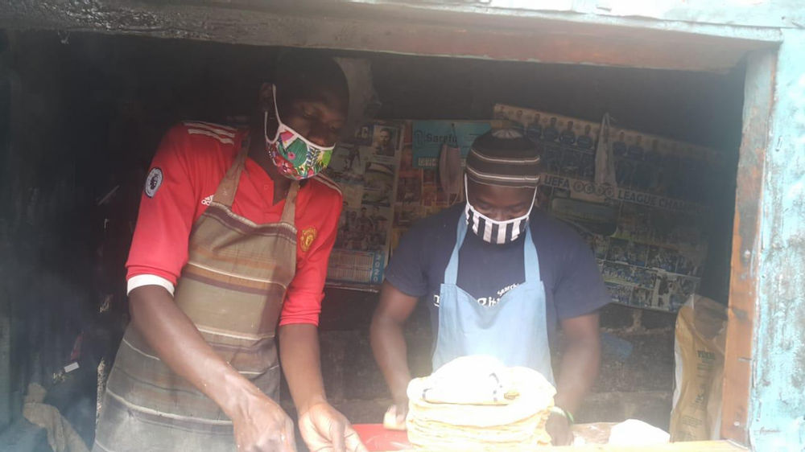
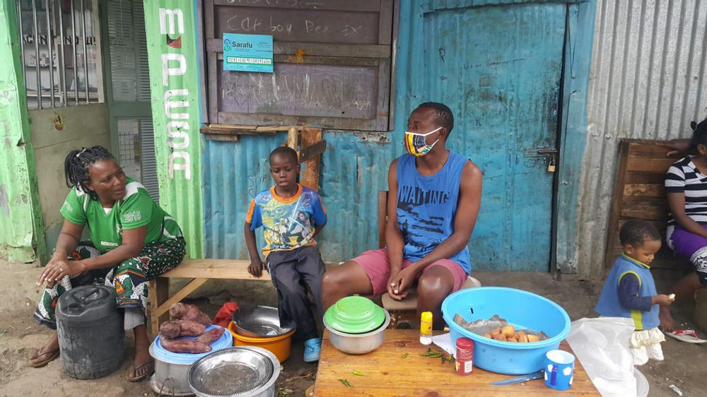
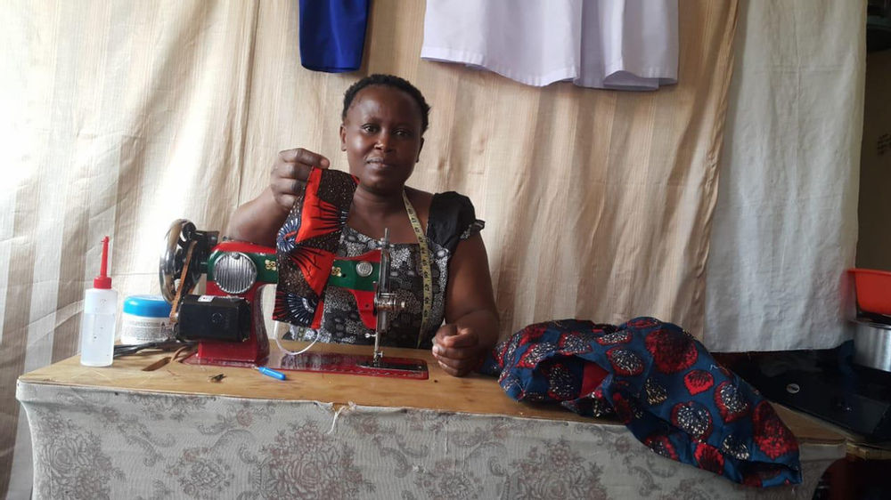
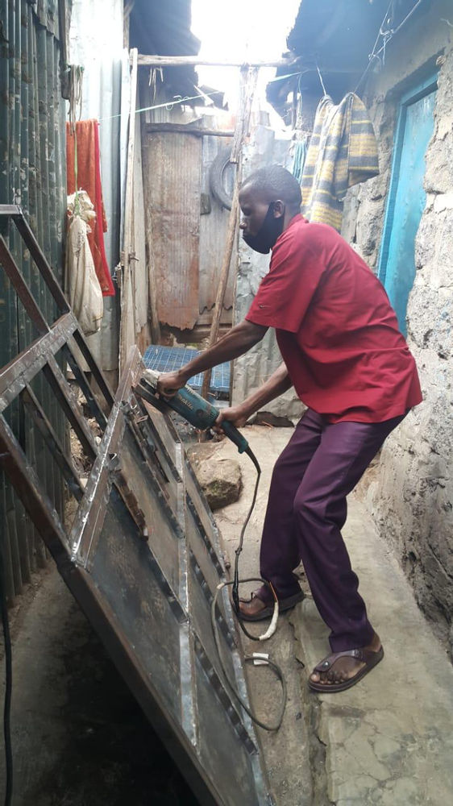
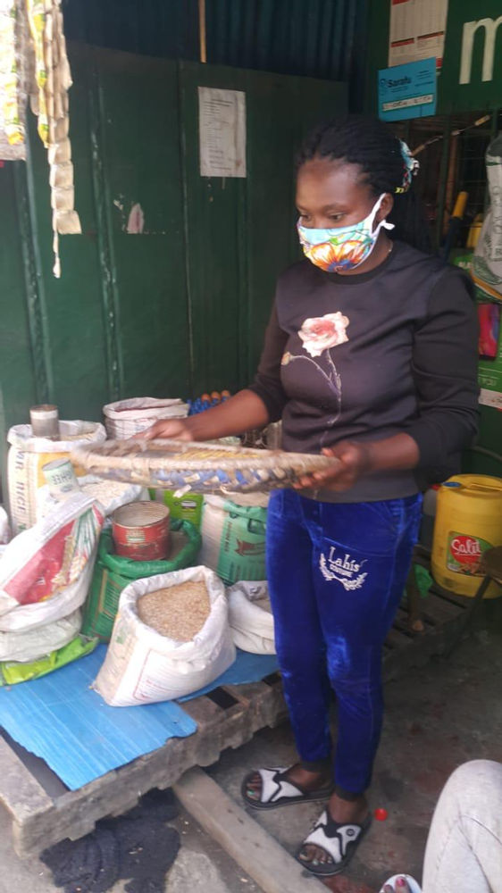

Managing their Own Economy during Crisis
Laurence and his brother together run the Blues Hotel - a small take away restaurant specializing in delicious chapati. Anyone in Mukuru Kayaba’s Kambi Moto village can come buy food there using Sarafu (a Community Inclusion Currency (CIC) - 400 Sarafu (USD $4) as well as a basic income is given freely to community members as part of a Red Cross initiative to support local economies during crisis)
Over the last 1 month they have had 268 clients come buy over $3,000 USD worth of their cooked food! What makes it even more amazing is that they have spent an equivalent of $2,600 USD of Sarafu to purchase cooking oil, fuel and wheat flour for their business. Circular economy - circular chapati!
Vincent and his mother have used Sarafu for the past 8 months providing different delicacies to the people of Mukuru Kayaba. They have decided to support their community in Mukuru by accepting Sarafu from any customer and also they spend their CIC by buying wheat flour,beans and other products from different outlets.
Over the last month they have had 123 customers and sold $840 USD by accepting Sarafu when Kenyan Shillings is scarce and they have spent roughly the same amount on their own basic needs - creating and maintaining a circular economy.
Susan is a mother and tailor in Mukuru. She was started using CICs 2 months ago and she also registered her Women's Savings Group into the network. Susan and the group members work tirelessly in order to provide masks to people in her community by selling them using Sarafu. She uses the currency to purchase food for her family and also save some in the group since national currency is scarce at the moment.
In the last month Sarah has sold $756 USD worth of masks to over 100 people. Need a mask? Talk to Susan!
This guy is amazing! Victor joined the network of Sarafu users 2 months ago. He is in the jua kali sector and very popular in his area for making metalic doors, desks and even jiko (ovens). He accepts Sarafu in his business since he can as well spend it in order to get food for his family. His business had been stuck due to covid 19 but when he joined Sarafu, customers started coming as they wanted some study desks and metallic doors for their homes and businesses.
Victor in the last month has had 54 clients and sold $1,246 USD worth of his services using Sarafu
Grace is one of the Red Cross' disaster response team members and is also a caring mother. She has a cereal shop in Mukuru and she feeds more than a hundred households. She joined the network 8 months ago and in this time of the pandemic, she has dedicated her shop to feed even more families by use of the CIC (Sarafu). She has increased her trade volume in order to help families get a meal. In return, Gertrude also spends more of her Sarafu in the community and by doing so, she is able to save the national currency which she uses to buy more stock for her shop.
Grace has given out $2,286 USD worth of food to 114 community members this month using Sarafu and has spent $2,316 USD on restocking and her family basic needs. She is a powerhouse making her community thrive during crisis and charting a path toward a resilient economic recovery.